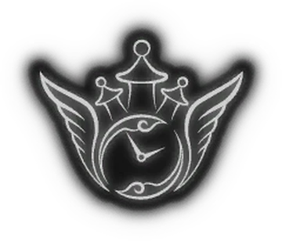

Graveyard Shift
If you are here it means that you are or were part of the Graveyard Shift group.
This place sort of works like an archive of important stuff connected with the group. Stuff like past packs and saves.
